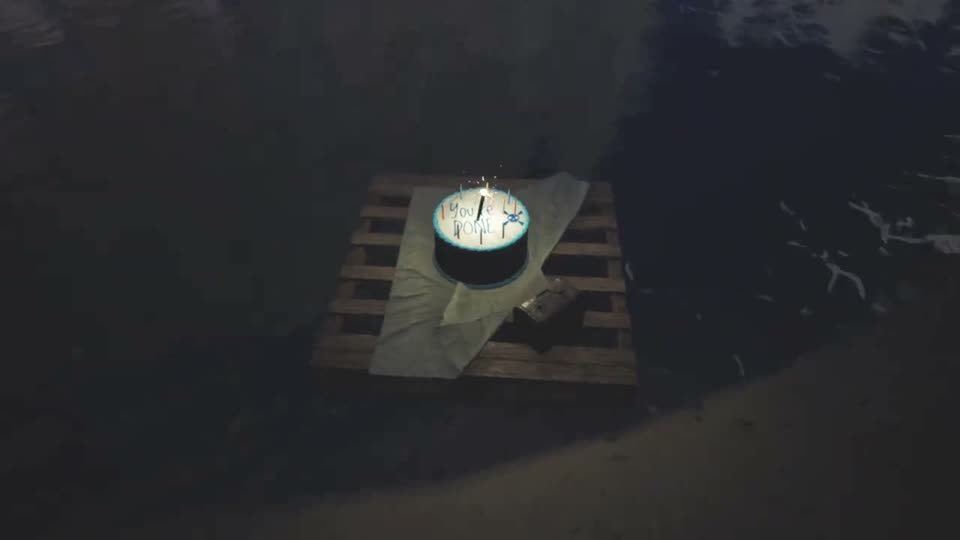
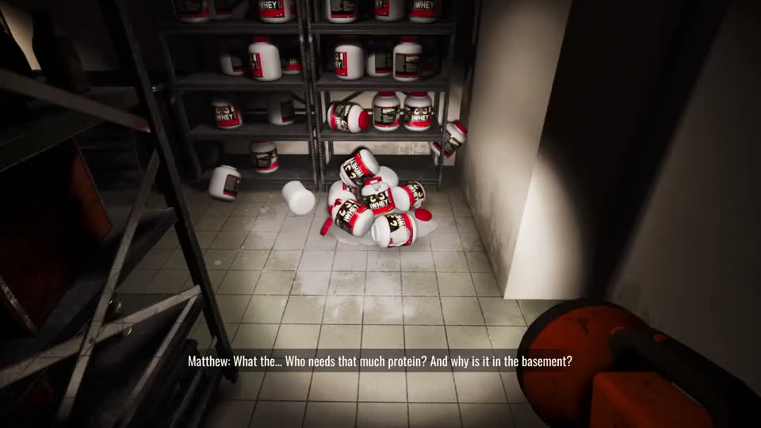
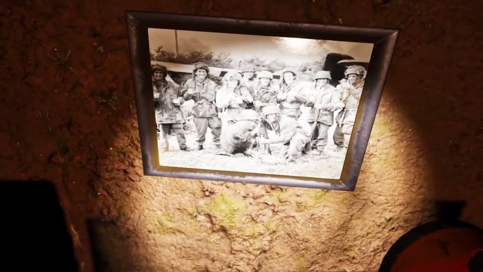
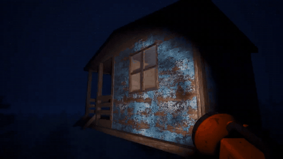
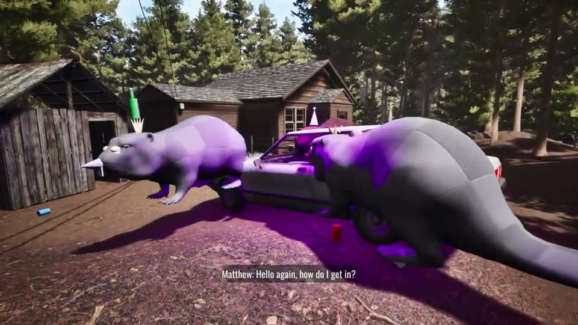
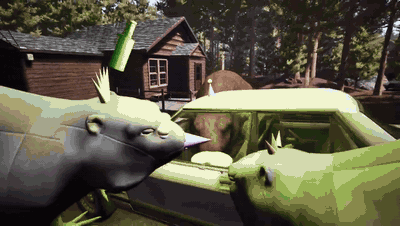

Don't Mess With Bober review: a revenge beaver, a super jump and a lot of yeeting

Don't Mess With Bober is a first-person walking sim with a touch of 80s horror movies, from Peace_Studio and DonCorsaire, out on Steam since July 2025. You arrive at a cabin on vacation and pick up 10 pieces of trash. The bag goes in a bin by the river, and the bin rolls into the water and breaks a beaver dam. Then you catch 5 fish and go to bed. From then on the beaver wants revenge. The store page says it runs about 30 to 60 minutes.
The beaver is petty in the real game too. A birthday cake floats by with "You're Dead" written on it, and it blows up. Then the power goes out, the beaver jams a nailed plank into my windshield, and the basement is full of chewed-up protein tubs. "Obviously the beaver's getting jacked, dog." Later I ended up in a cave with army photos and trophies. "Yo, the beaver was in the war!"


Then there is my BoberLab mod. It gave me a super jump and a way to grab and yeet things, so I threw a lookout table, the whole lookout hut and my own station wagon into the sky ("No beaver gets to touch my station wagon!"). It also let me stand in a burning cabin without a scratch. I fell off the edge of the map and came back to a cabin with no walls or roof, and later restarted from the opening cutscene after the quest broke. I also crashed the game twice trying to yeet the beaver.

I still finished the real objectives: three workbenches, three switches, the boat key from a dead worker and dynamite at the end. Then my mod threw a party at the cabin, with beavers in party hats dancing around my car. "This is how the game should have [ended]. Beaver party."


The cake, the protein tubs and the army photos are the funniest parts of the game itself. Store page: Don't Mess With Bober on Steam
More games I broke with mods: Find the Box, where the boxes hunt me, The Pale Mimic and Alien: Isolation with Thomas the Tank Engine.